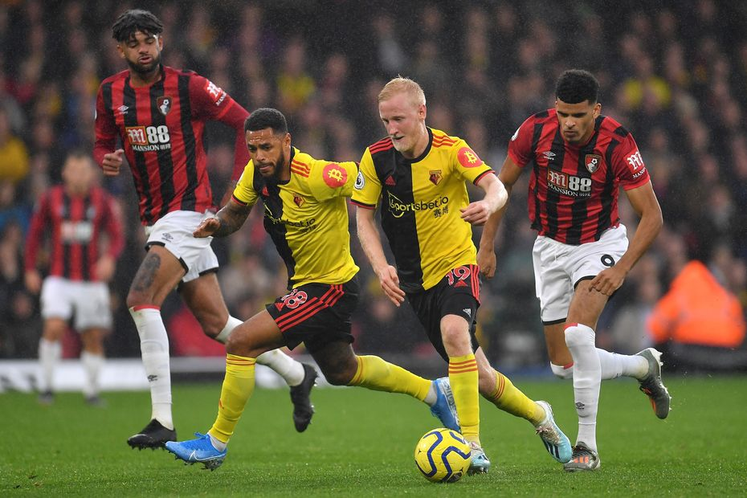
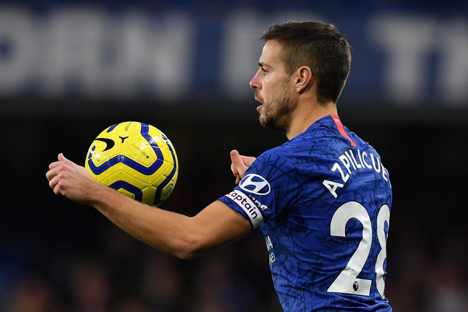
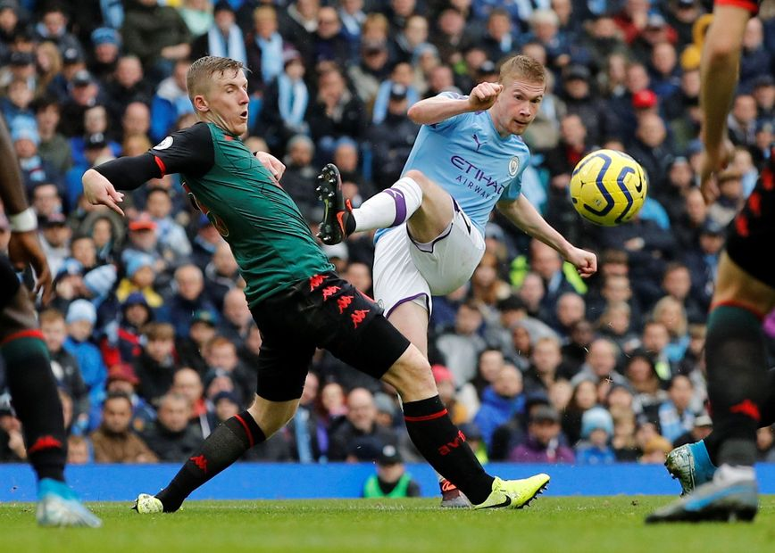
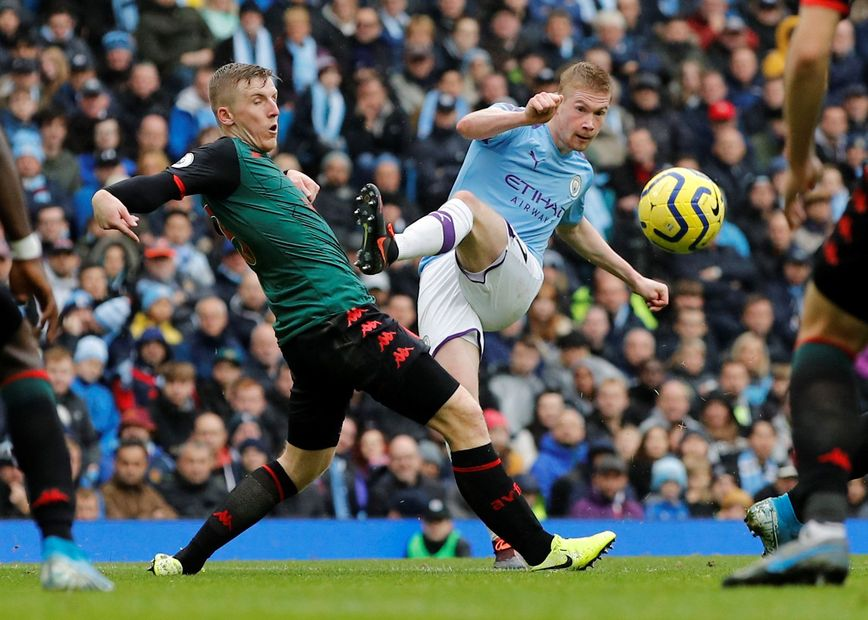

English Premier League
2020
Details
The Premier League, often referred to as the English Premier League or the EPL outside England, is the top level of the English football league system. Contested by 20 clubs, it operates on a system of promotion and relegation with the English Football League (EFL).
The Premier League is a corporation in which the member clubs act as shareholders. Seasons run from August to May with each team playing 38 matches (playing all 19 other teams both home and away). Most games are played on Saturday and Sunday afternoons. The Premier League has featured 47 English and two Welsh clubs since its inception, making it a cross-border league.
The competition was formed as the FA Premier League on 20 February 1992 following the decision of clubs in the Football League First Division to break away from the Football League, founded in 1888, and take advantage of a lucrative television rights deal. The deal was worth £1 billion a year domestically as of 2013–14, with Sky and BT Group securing the domestic rights to broadcast 116 and 38 games respectively. The league generates €2.2 billion per year in domestic and international television rights. Clubs were apportioned central payment revenues of £2.4 billion in 2016–17, with a further £343 million in solidarity payments to English Football League (EFL) clubs.[
Tournament Images


 
